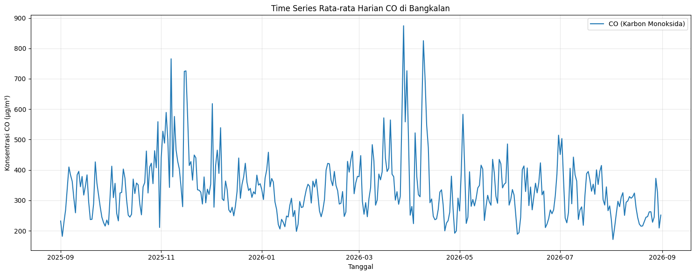
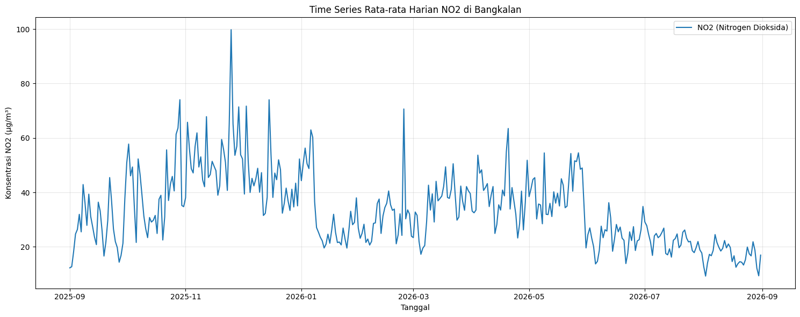
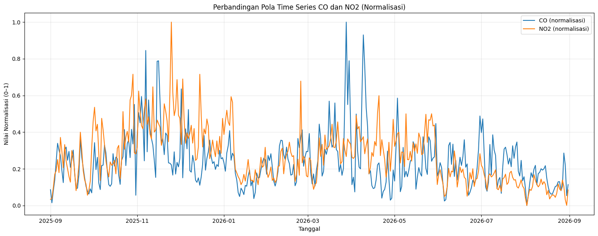

Analisis Kualitas Udara dan Sumber Polutan di Bangkalan#
1. Business Understanding#
Tujuan Proyek: Tujuan utama dari analisis ini adalah untuk mengetahui dan memantau tingkat kualitas udara (khususnya polutan berbahaya seperti CO dan NO2) di wilayah Bangkalan, Jawa Timur. Kita akan melihat tren perubahan polutan selama satu tahun terakhir (September 2025 - 31 Agustus 2026).
Manfaat Proyek:
Bagi Pemerintah Daerah: Menjadi dasar evaluasi dan pengambilan kebijakan terkait regulasi emisi kendaraan, terutama di jalur padat seperti akses Jembatan Suramadu.
Bagi Masyarakat: Memberikan edukasi dan kesadaran (awareness) terkait waktu-waktu dengan kualitas udara terburuk, sehingga masyarakat bisa membatasi aktivitas luar ruangan atau menggunakan masker.
Bagi Lingkungan: Mengidentifikasi apakah ada aktivitas industri atau pembakaran lahan yang memicu anomali lonjakan polusi secara tiba-tiba di Bangkalan.
import pandas as pd
import requests
# 1. Tentukan Koordinat Bangkalan
latitude = -7.03
longitude = 112.74
# 2. Setup Parameter API (1 Tahun)
url = "https://air-quality-api.open-meteo.com/v1/air-quality"
params = {
"latitude": latitude,
"longitude": longitude,
"start_date": "2025-09-01",
"end_date": "2026-08-31",
"hourly": ["carbon_monoxide", "nitrogen_dioxide"]
}
# 3. Crawling Data dengan Proteksi Koneksi
try:
response = requests.get(url, params=params, timeout=15)
response.raise_for_status() # Memeriksa jika ada error HTTP (misal: 404/500)
data = response.json()
# 4. Memasukkan data ke DataFrame dan langsung konversi waktu
df = pd.DataFrame({
"tanggal_jam": pd.to_datetime(data['hourly']['time']),
"CO": data['hourly']['carbon_monoxide'],
"NO2": data['hourly']['nitrogen_dioxide']
})
# 5. Ekspor CSV
df.to_csv("data_polutan_bangkalan.csv", index=False)
print("Data berhasil ditarik dan disimpan sebagai 'data_polutan_bangkalan.csv'\n")
print(df.head())
except requests.exceptions.ConnectionError:
print("Error Koneksi (11001): Pastikan laptop Anda terhubung ke internet yang stabil.")
except requests.exceptions.RequestException as e:
print(f"Gagal mengambil data dari API: {e}")
Data berhasil ditarik dan disimpan sebagai 'data_polutan_bangkalan.csv'
tanggal_jam CO NO2
0 2025-09-01 00:00:00 760.0 29.7
1 2025-09-01 01:00:00 635.0 23.4
2 2025-09-01 02:00:00 391.0 14.8
3 2025-09-01 03:00:00 207.0 8.1
4 2025-09-01 04:00:00 165.0 5.2
2. Data Understanding#
Dataset yang digunakan berisi rekaman kualitas udara per jam di wilayah Bangkalan, Jawa Timur, selama periode 1 September 2025 sampai 31 Agustus 2026. Data diperoleh melalui Open-Meteo Air Quality API dan kemudian disimpan dalam format CSV.
2.1 Variabel pada Dataset#
Variabel |
Keterangan |
|---|---|
|
Waktu pengukuran/perekaman data dalam format tanggal dan jam |
|
Konsentrasi karbon monoksida dalam μg/m³ |
|
Konsentrasi nitrogen dioksida dalam μg/m³ |
Dataset memiliki 8.760 baris data, yang sesuai dengan data per jam selama satu tahun (365 × 24 jam).
2.2 Pengertian Polutan#
1. Karbon Monoksida (CO)
Karbon monoksida adalah gas yang tidak berwarna dan tidak berbau. CO terutama terbentuk dari proses pembakaran bahan bakar yang tidak sempurna. Paparan CO dalam konsentrasi tinggi dapat mengganggu kemampuan darah membawa oksigen ke seluruh tubuh. Dalam konteks wilayah perkotaan, salah satu sumber penting CO adalah emisi kendaraan bermotor dan proses pembakaran lainnya.
2. Nitrogen Dioksida (NO2)
Nitrogen dioksida adalah salah satu gas pencemar udara yang umumnya dihasilkan dari proses pembakaran pada suhu tinggi, terutama pembakaran bahan bakar fosil. Sumbernya dapat berasal dari kendaraan bermotor, pembangkit energi, dan aktivitas industri. Paparan NO2 dapat mengiritasi saluran pernapasan dan berkontribusi terhadap pembentukan pencemar udara sekunder.
Catatan: Dataset yang digunakan dalam tugas ini hanya memiliki dua parameter polutan, yaitu CO dan NO2. Oleh karena itu, analisis kualitas udara pada tugas ini difokuskan pada kedua parameter tersebut dan tidak dimaksudkan untuk menggambarkan seluruh kondisi kualitas udara.
2.3 Interpretasi Awal Sumber Polutan#
Dalam konteks Bangkalan, kendaraan bermotor dapat menjadi salah satu sumber emisi CO dan NO2, terutama pada area dengan aktivitas lalu lintas tinggi. Aktivitas pembakaran dan industri juga dapat berkontribusi terhadap emisi. Namun, data yang tersedia tidak memiliki variabel sumber emisi, sehingga hubungan antara lonjakan polutan dan aktivitas tertentu tidak dapat disimpulkan secara langsung. Lonjakan pada grafik hanya dapat disebut sebagai anomali atau perubahan konsentrasi yang perlu dianalisis lebih lanjut.
2.4 Pertanyaan Analisis#
Beberapa pertanyaan yang dapat dijawab dari dataset ini:
Bagaimana perubahan konsentrasi CO selama satu tahun?
Bagaimana perubahan konsentrasi NO2 selama satu tahun?
Apakah terdapat pola atau tren tertentu berdasarkan waktu?
Pada periode kapan terjadi konsentrasi CO atau NO2 yang relatif tinggi?
Apakah terdapat data kosong atau nilai negatif yang perlu dibersihkan?
# Mengecek ukuran dataset
print("Jumlah baris dan kolom:", df.shape)
# Mengecek tipe data
print("\nTipe data:")
print(df.dtypes)
# Mengecek data kosong
print("\nJumlah data kosong:")
print(df.isnull().sum())
# Mengecek nilai negatif pada polutan
data_aneh = df[(df['CO'] < 0) | (df['NO2'] < 0)]
print("\nJumlah data anomali (negatif):", len(data_aneh))
# Menampilkan statistik deskriptif
print("\nStatistik deskriptif:")
display(df[['CO', 'NO2']].describe())
Jumlah baris dan kolom: (8760, 3)
Tipe data:
tanggal_jam datetime64[ns]
CO float64
NO2 float64
dtype: object
Jumlah data kosong:
tanggal_jam 0
CO 0
NO2 0
dtype: int64
Jumlah data anomali (negatif): 0
Statistik deskriptif:
| CO | NO2 | |
|---|---|---|
| count | 8760.000000 | 8760.000000 |
| mean | 341.515639 | 33.734989 |
| std | 190.568504 | 23.514247 |
| min | 57.000000 | 2.700000 |
| 25% | 225.000000 | 16.000000 |
| 50% | 290.500000 | 28.300000 |
| 75% | 396.000000 | 46.000000 |
| max | 2153.000000 | 195.500000 |
3. Data Preparation untuk Time Series#
Karena data dicatat setiap jam, visualisasi selama 8.760 titik sekaligus dapat terlihat terlalu padat. Untuk melihat tren jangka panjang, data diringkas menjadi rata-rata harian.
Perhitungan rata-rata harian tidak menghapus data asli. Data asli tetap digunakan sebagai sumber, sedangkan df_harian hanya merupakan hasil agregasi untuk keperluan visualisasi.
# Pastikan kolom waktu bertipe datetime
df['tanggal_jam'] = pd.to_datetime(df['tanggal_jam'])
# Urutkan berdasarkan waktu
df = df.sort_values('tanggal_jam')
# Rata-rata harian untuk visualisasi time series
df_harian = (
df.set_index('tanggal_jam')[['CO', 'NO2']]
.resample('D')
.mean()
)
print("Jumlah titik time series harian:", len(df_harian))
display(df_harian.head())
Jumlah titik time series harian: 365
| CO | NO2 | |
|---|---|---|
| tanggal_jam | ||
| 2025-09-01 | 232.166667 | 12.308333 |
| 2025-09-02 | 181.791667 | 12.716667 |
| 2025-09-03 | 228.041667 | 18.191667 |
| 2025-09-04 | 268.458333 | 24.716667 |
| 2025-09-05 | 339.500000 | 26.400000 |
4. Visualisasi Time Series CO#
Grafik berikut menunjukkan perubahan rata-rata konsentrasi CO (Karbon Monoksida) dari hari ke hari selama periode pengamatan. Sumbu X menunjukkan waktu, sedangkan sumbu Y menunjukkan konsentrasi CO dalam μg/m³.
import matplotlib.pyplot as plt
plt.figure(figsize=(15, 6))
plt.plot(
df_harian.index,
df_harian['CO'],
label='CO (Karbon Monoksida)'
)
plt.title('Time Series Rata-rata Harian CO di Bangkalan')
plt.xlabel('Tanggal')
plt.ylabel('Konsentrasi CO (μg/m³)')
plt.legend()
plt.grid(True, alpha=0.3)
plt.tight_layout()
plt.show()

5. Visualisasi Time Series NO2#
Grafik berikut menunjukkan perubahan rata-rata konsentrasi NO2 (Nitrogen Dioksida) dari hari ke hari selama periode pengamatan.
CO dan NO2 divisualisasikan secara terpisah karena skala nilainya berbeda. Pemisahan ini membuat perubahan masing-masing polutan lebih mudah dibaca.
plt.figure(figsize=(15, 6))
plt.plot(
df_harian.index,
df_harian['NO2'],
label='NO2 (Nitrogen Dioksida)'
)
plt.title('Time Series Rata-rata Harian NO2 di Bangkalan')
plt.xlabel('Tanggal')
plt.ylabel('Konsentrasi NO2 (μg/m³)')
plt.legend()
plt.grid(True, alpha=0.3)
plt.tight_layout()
plt.show()

6. Perbandingan Pola CO dan NO2#
Karena CO dan NO2 memiliki skala konsentrasi yang berbeda, perbandingan langsung pada satu sumbu Y kurang ideal. Untuk membandingkan bentuk pola/pergerakannya, kedua variabel dapat dinormalisasi menggunakan Min-Max Scaling.
# Min-Max normalization untuk membandingkan pola
df_norm = df_harian.copy()
for col in ['CO', 'NO2']:
min_val = df_norm[col].min()
max_val = df_norm[col].max()
df_norm[col] = (df_norm[col] - min_val) / (max_val - min_val)
plt.figure(figsize=(15, 6))
plt.plot(df_norm.index, df_norm['CO'], label='CO (normalisasi)')
plt.plot(df_norm.index, df_norm['NO2'], label='NO2 (normalisasi)')
plt.title('Perbandingan Pola Time Series CO dan NO2 (Normalisasi)')
plt.xlabel('Tanggal')
plt.ylabel('Nilai Normalisasi (0–1)')
plt.legend()
plt.grid(True, alpha=0.3)
plt.tight_layout()
plt.show()

7. Implementasi Analisis di KNIME#
Analisis yang sama juga dapat dilakukan menggunakan KNIME Analytics Platform dengan mengambil data langsung dari PostgreSQL yang sudah tersimpan di Aiven.
7.1 Alur Node KNIME#
Workflow dasar:
PostgreSQL Connector
↓
DB Table Selector
↓
DB Reader
↓
Column Filter (opsional)
↓
String to Date&Time / Date&Time Configuration
↓
Time Series Configuration
↓
Line Plot / Time Series Plot
Pada workflow yang sudah dibuat, tiga node pertama sudah benar:
PostgreSQL Connector → DB Table Selector → DB Reader
Node tersebut digunakan untuk mengambil tabel data_polutan_bangkalan dari PostgreSQL.
7.2 Langkah-Langkah di KNIME#
Langkah 1 — PostgreSQL Connector#
Buka KNIME dan buat workflow baru.
Cari node PostgreSQL Connector.
Tarik node ke workflow.
Klik dua kali node tersebut.
Isi informasi koneksi dari Aiven:
Host
Port
Database
Username
Password
Gunakan pengaturan SSL sesuai konfigurasi koneksi Aiven.
Klik Test Connection.
Jika berhasil, klik OK.
Password Aiven bersifat rahasia dan jangan dimasukkan ke laporan atau screenshot tugas.
Langkah 2 — DB Table Selector#
Cari node DB Table Selector.
Hubungkan output dari
PostgreSQL ConnectorkeDB Table Selector.Buka konfigurasi node.
Pilih schema/database yang digunakan.
Pilih tabel:
data_polutan_bangkalanKlik OK.
Langkah 3 — DB Reader#
Cari node DB Reader.
Hubungkan
DB Table Selector→DB Reader.Execute node.
Buka hasil tabel untuk memastikan data sudah terbaca.
Data yang diharapkan memiliki kolom:
id
tanggal_jam
co
no2
dan jumlah data sekitar 8.760 baris.
Langkah 4 — Mengecek Statistik#
Node Statistics dapat digunakan untuk melihat ringkasan statistik data.
Hubungkan:
DB Reader → Statistics
Kemudian execute.
Gunakan node ini untuk melihat nilai seperti:
minimum
maksimum
mean/rata-rata
standar deviasi
jumlah data
Langkah 5 — Mengubah Kolom Waktu#
Kolom tanggal_jam harus dikenali sebagai tipe Date&Time agar dapat digunakan untuk time series.
Jika setelah DB Reader kolom waktu belum dikenali sebagai Date&Time, gunakan node yang sesuai untuk konversi tipe tanggal/waktu, misalnya:
String to Date&Time
Konfigurasi format waktu:
yyyy-MM-dd HH:mm:ss
Contoh:
2025-09-01 00:00:00
Langkah 6 — Membuat Time Series#
Untuk visualisasi time series, gunakan node visualisasi time series/line plot yang tersedia pada versi KNIME yang digunakan.
Atur:
X-axis →
tanggal_jamY-axis →
co
Kemudian buat visualisasi kedua:
X-axis →
tanggal_jamY-axis →
no2
Hasilnya adalah dua grafik yang menunjukkan perubahan CO dan NO2 terhadap waktu.
Langkah 7 — Jika Grafik Terlalu Padat#
Data memiliki 8.760 titik per jam. Jika grafik terlalu padat, lakukan agregasi terlebih dahulu menjadi rata-rata harian.
Konsepnya:
tanggal_jam
↓
ambil tanggal
↓
Group By / agregasi harian
↓
AVG(co)
AVG(no2)
↓
Line Plot
Dengan demikian, satu tahun data menjadi sekitar 365 titik harian sehingga tren lebih mudah dibaca.
7.3 Workflow KNIME yang Direkomendasikan#
Alur Kerja Ekstraksi dan Analisis Data (KNIME)
PostgreSQL Connector: Membangun koneksi antara aplikasi KNIME dengan database PostgreSQL tempat data polutan disimpan.
DB Table Selector: Memilih tabel spesifik yang memuat data deret waktu kualitas udara dari database yang telah terkoneksi.
DB Reader: Mengeksekusi instruksi pembacaan dan menarik seluruh data dari PostgreSQL ke memori lokal KNIME untuk diproses lebih lanjut sebagai data table.
Statistics: Menghitung secara otomatis ringkasan statistik deskriptif menyeluruh (distribusi, tendensi sentral, dan dispersi) dari seluruh kolom numerik yang tersedia.

7.4 Output yang Diharapkan#
Interpretasi Hasil Analisis Statistik

Parameter |
Rentang (Min - Max) |
Rata-rata |
Skewness & Kurtosis |
Analisis Distribusi |
|---|---|---|---|---|
id (Waktu) |
1 - 8.760 |
4.380,5 |
Skew: 0 |
Total observasi mencapai 8.760 baris. Angka ini secara presisi merepresentasikan total jam dalam 1 tahun penuh (24 jam x 365 hari), menunjukkan tidak ada data waktu yang terlewat. |
co (Karbon Monoksida) |
57 - 2.153 |
341,52 |
Skew: 2.868 |
Distribusi data sangat condong ke kanan (right-skewed). Nilai kurtosis positif yang ekstrem (13.261) menandakan kurva berekor tebal (heavy-tailed), membuktikan adanya lonjakan emisi CO anomali pada waktu tertentu yang sangat jauh melampaui batas normal. |
no2 (Nitrogen Dioksida) |
2.7 - 195.5 |
33,744 |
Skew: 1.437 |
Memiliki pola ketimpangan serupa dengan CO. Nilai maksimum (195.5) yang terpaut sangat jauh di atas rata-rata (33.744) menegaskan keberadaan outlier saat polusi NO2 berada pada tingkat puncak. |
Setelah workflow selesai, hasil analisis minimal terdiri dari:
Data berhasil dibaca dari PostgreSQL Aiven.
Statistik deskriptif CO dan NO2.
Grafik time series CO.
Grafik time series NO2.
Jika diperlukan, grafik perbandingan pola CO dan NO2 setelah normalisasi.
Kesimpulan mengenai pola perubahan konsentrasi polutan selama periode pengamatan.
Catatan interpretasi: grafik time series menunjukkan pola perubahan konsentrasi dari waktu ke waktu. Grafik tersebut belum cukup untuk membuktikan penyebab suatu lonjakan polusi. Untuk menentukan sumber penyebab, diperlukan variabel tambahan seperti volume lalu lintas, cuaca, aktivitas industri, atau data emisi.
8. Kesimpulan Sementara#
Berdasarkan tahap Data Understanding dan visualisasi time series, dataset ini dapat digunakan untuk mengamati perubahan konsentrasi CO dan NO2 di Bangkalan selama periode September 2025–Agustus 2026.
Analisis time series membantu mengidentifikasi pola perubahan dan periode dengan konsentrasi yang relatif tinggi atau rendah. Tahap berikutnya dapat dikembangkan menjadi analisis yang lebih mendalam, seperti analisis pola berdasarkan jam, hari, bulan, deteksi anomali, korelasi antara CO dan NO2, atau pemodelan prediksi.
Kesimpulan akhir sebaiknya ditulis setelah grafik dijalankan dan hasil pengamatan terhadap pola data benar-benar tersedia.